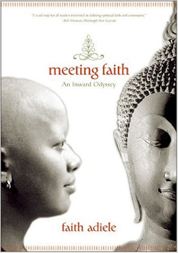

Switchback staffer C. Adán Cabrera sat down with Faith Adiele on a sunny September afternoon at the University of San Francisco to discuss her book, her thoughts on the creative life, and her writing process.
In a lot of ways, Faith Adiele inhabits the boundaries. Racially, spiritually, creatively, Faith has created an identity all her own that is a mixture of many different categories. She is, in many respects, also a trailblazer, the most prominent example being her temporary ordination as Thailand’s first black Buddhist nun. Her memoir details this unique experience in her life. Faith is the author of the memoir Meeting Faith: The Forest Journals of a Black Buddhist Nun that won the 2005 PEN Beyond Margins Award for Best Memoir. She is also the co-editor of Coming of Age Around the World: A Multicultural Anthology, which contains 24 international stories ideal for college and high school classrooms. Presently, she is the Distinguished Visiting Writer at Mills College.
Dair is the very epitome of what I mean when I say "typographer": someone who designs with type, not just a fancy typesetter, but someone who uses type, in all its variations, as the principle element of design. Since type carries meaning, the practice of typography requires a designer who cares about the words themselves. It requires someone who cares enough, and is skillful enough, to make the type express that meaning, rather than serve as simply eye-catching decoration.
I’ve always written, and my mom thought I was going to be a poet. We were a minority in our small, conservative town on many levels and on many levels we were at odds with what was going on. My mom spent her entire time escaping in books. I learned to do the same when, at a young age, I felt that no one was really like me. I learned early on that books could save your life, and that’s a conversation I wanted to be a part of.
The idea of books saving your life is really fascinating. Can you expand more?
I had conversations with books that I couldn’t have with people in my hometown. If I listened to those folks, they’d say that I was going to go to hell pretty soon! (Laughs) I wasn’t represented in school, or in what I studied. Politically, racially, culturally – none of that was represented there. Books sustained me so that I could get out to a place where there were people like me. In the absence of my father, I had my father's friend and tribesman Chinua Achebe, Nobel Laureate Wole Soyinka, all those writers who could talk to me and teach me what it was like to be Nigerian. I could read Toni Morrison and find out what it was like to be a black woman in the absence of any in my town. I needed these authors to mentor me. As a result, I wanted to create work that did just that, that spoke to people, that could save at least one person in the room. I’m not interested in “art for art’s sake” necessarily but am more interested in how art can change lives.
Would you say, then, that you write with a mission? How did this worldview influence your decision to write?
I’m wired to think in terms of writing. I’m interested in metaphor, image, historical connections. When I went to university, I thought to myself, “Wow, that’s impractical, I should learn something that’s useful” to contribute to the community and continue the struggle of the civil rights movement. I did a lot of nonprofit work initially, and wrote on the side. I applied to graduate school on a whim and I thought that I couldn’t go. I thought I couldn’t leave good work, that I couldn’t leave community in order to pursue something as selfish as art. My best friend told me to consider, though, that perhaps my role is to contribute to the struggle through writing. That gave me permission to then return to my age-old love and to then see it as my work.
That perspective is really interesting, Faith. As you know, writing can be a very selfish and lonely act, and what you’ve just said – writing serving as a tool to effectuate individual and then social change – is really refreshing. It’s also interesting that you feel you needed “permission” to write. Did you find this to be true for anyone else in your life?
I find that obstacle a lot with the people of color who take my memoir workshops. Memoir is seen as the ultimate in selfishness sometimes, and people of color or first-generation college immigrants have been told that writing or talking about yourself is selfish. But I sincerely believe that writing a memoir is actually one of the most political things you can do. If you put a memoir out there that goes against the master narrative – that in itself is a political action. A personal memoir is actually a public event, a very politically forthright thing to do. You have to give people permission to do that.
You experienced many things while ordained as a Buddhist nun. You slept only four hours a night, meditated the other 20, had one meal a day, and were forbidden all the usual pleasures of American life. How did you perceive the U.S. after such an experience?
I had moments of clarity later when I was writing and I could make meaning out of my experiences. America seemed very young and green and brash. Everyone also smelled like meat and milk when I got back (Laughs). Being away from the dichotomy of black and white, I realized that for the majority of the world, that binary wasn't a central preoccupation. I thought a lot about impermanence. I went back to Boston (where I was attending university) at that time to get the best of what they had to offer, which wasn't everything. I knew that I could leave for somewhere else for the next opportunity.
Now perhaps is a good time to turn to the memoir itself. Meeting Faith is in some ways a hybrid of genres. You detail your life living as an ordained Buddhist nun in a remote part of Thailand, and you discuss your challenges, doubts, frustrations, hungers, etc. There are also elements of fiction in your careful attention to create vivid and compelling characters and you do wonders at creating scenes that place the reader in the middle of that forest with you, chanting along with the monks and nuns. This seems like a lot to orchestrate! Can you tell me a little bit about your process of writing this book?
I never thought that I was going to write about it, I hadn’t gone back and read the journals until I felt the desire to write. I had sent some journals that I’d written during my time as a nun to an editor at Norton for a collection they were putting together. Shortly thereafter, Ms. Magazine did a piece on me to publicize the anthology and that's when I started to realize that there might be a public place for these nun journal entries.
The book is also interesting in terms of structure. In addition to the main text, you also include journal entries in the margin, photographs of different moments in your ordination, and even a list of your progress in your meditative practice. Did you always envision this structure for your book?
Initially I thought it would just be a slim volume of my journals so at first I just transcribed them. When I started graduate school, I met with an agent. After seeing my journal entries, she suggested that I rewrite the entire book as a memoir. I didn’t agree with this at all! (Laughs) So I ran away, drank heavily for two weeks, and then by week two I realized she was right. (Laughs) Next thing you know, I ran into poet Jen Hofer, whom I'd met only once before, in a bar. As soon as I saw her, I knew she could tell me how to write my book and I begged her to read my journals. A week later she had me over for lunch and returned my 400 pages with recurring themes marked in green ink. She also told me she heard many voices in the manuscript and suggested I add even more and come up with a structure that made this a strength. I kept turning in chapters written in two separate columns while I was in grad school and my classmates couldn't see their function. Finally, I realized that I could have the journal entries describe the internal meditative experience in a way that couldn’t be expressed in the main text, but that needed to be represented in that voice. Then I became clearer with the way that things needed to look. I wrote each chapter then according to theme. Once I had all of the chapters, I tried to connect them in some sort of narrative arc – the meditative portions gaining deeper as memories of my childhood also resurfaced, for example.
Initially I thought it would just be a slim volume of my journals so at first I just transcribed them. When I started graduate school, I met with an agent. After seeing my journal entries, she suggested that I rewrite the entire book as a memoir. I didn’t agree with this at all! (Laughs) So I ran away, drank heavily for two weeks, and then by week two I realized she was right. (Laughs) Next thing you know, I ran into poet Jen Hofer, whom I'd met only once before, in a bar. As soon as I saw her, I knew she could tell me how to write my book and I begged her to read my journals. A week later she had me over for lunch and returned my 400 pages with recurring themes marked in green ink. She also told me she heard many voices in the manuscript and suggested I add even more and come up with a structure that made this a strength. I kept turning in chapters written in two separate columns while I was in grad school and my classmates couldn't see their function. Finally, I realized that I could have the journal entries describe the internal meditative experience in a way that couldn’t be expressed in the main text, but that needed to be represented in that voice. Then I became clearer with the way that things needed to look. I wrote each chapter then according to theme. Once I had all of the chapters, I tried to connect them in some sort of narrative arc – the meditative portions gaining deeper as memories of my childhood also resurfaced, for example.
I know that one of your degrees is in fiction. To what extent did you use the techniques of fiction in writing Meeting Faith?
I do in general. Meeting Faith was my nonfiction thesis in graduate school. In both genres, imagery is really important, as is metaphor, scene, setting, dialogue, etc... I got the fiction degree to learn how to use these techniques and apply them to my nonfiction. I’m not interested in writing stories or novels, per se, but am interested in using those techniques to make my nonfiction more colorful, more narrative. Any art form is fiction once you’ve got it two dimensionally on the page, but any art form is truth too if people can relate to it because you hit on human truth. I like the limitations of nonfiction, though. If you can make metaphor out of nonfiction…it’s like trying to write a poem as a sestina. You have limitations, but you have to create art out of it.
What advice do you have for writers of color who are struggling to find their own voice? How did you deal with the very real anxiety of giving yourself "permission"?
You have to figure out why you write. My goal was never to be in the New Yorker, per se. I wrote because I wanted to start conversation with folks that I was interested in talking to. I didn't hear people discussing the complexity of my particular perspective. I wanted my work to spur these types of discussions. That’s why I write, not for other things. If you work on your craft so that your work is so damn good that no one can deny it, it kind of just opens the door. In Meeting Faith, until I got the right structure, people kept telling me that I couldn’t talk about certain things in the book. Once I got my craft down, people shut up. Work on writing the best damn story—that story that you feel most passionate about and that you have the most authority to write about and that would really be speaking to who you would wanna be talking to. Everything will come from that. You can make it happen by just making it being true to yourself, and to your art.
